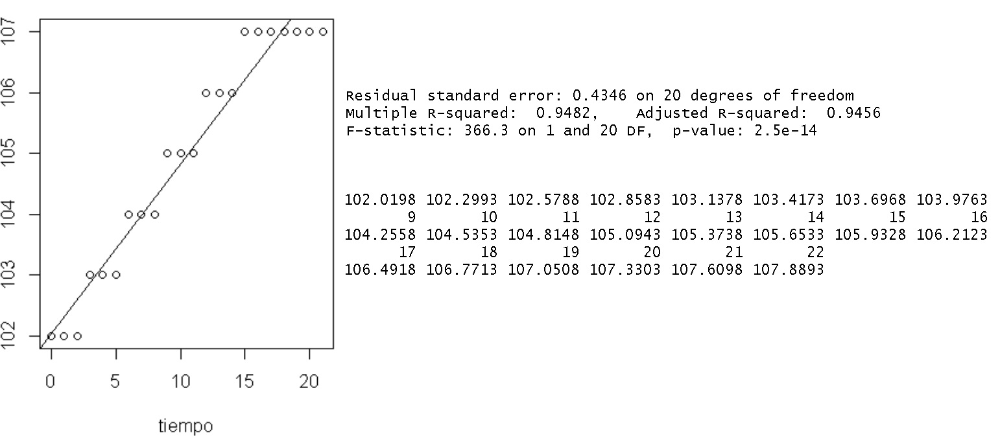
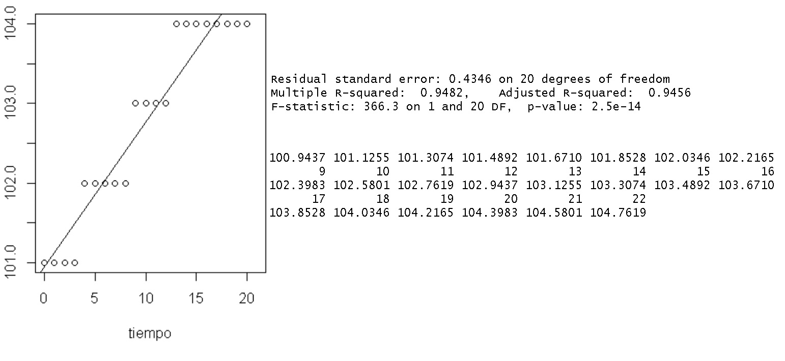

Proyecto Final BD
Introducción
¡Bienvenido a nuestro proyecto final de DB! Esta es una página dedicada al análisis de datos relacionados a los precios de los servicios esenciales así como alimentos de la cánasta básica mexicana con bases de datos no relacionales o NoSQL.
Debido a tiempos extraordinarios como hoy día 2020 con el Covid-19, nos hemos dado la tarea de observar la tendencia e incrementos de ciertos productos, en ver sí realmente ha habido una subida de precio a partir del mes de Enero hasta el mes de Noviembre de este año en distintas ciudades de México.
Para lograrlo hemos recurrido a MongoDB y R Studio, para observar que productos han crecido en aumento, y observar su comportamiento en una gráfica de regresión lineal.
Además, de usar Google Charts que son gráficas en Javascript hechas por Google, esto para dar una mejor representanción gráfica de los datos.
HipótesisLa hipótesis que se planteó el equipo fue: "En México han estado aumentando los precios a raíz del COVID-19, sobre todo en productos y servicios esenciales como: Agua, luz, gas, electricidad y en los propios alimentos".
Definición del proyectoEn nuestro proyecto final de bases de datos, nuestro equipo decidió usar la información directamente de la página del INEGI, obtenida en el INPC (Índice Nacional de Precios al Consumidor) por un archivo de comas, estos archivos representan la mayoría de los precios de múltiples meses en los últimos años y el actual.
La información que puede ser extraída se puede filtrar por ciudades, productos y servicios como:
- 1. Alimentos, bebidas y tabaco
- 2. Ropa, calzado y accesorios
- 3. Vivienda
- 4. Muebles, aparatos y accesorios domésticos
- 5. Salud y cuidado personal
- 6. Transporte
- 7. Educación y esparcimiento
- 8. Otros servicios
Estos archivos pueden ser extraídos del siguiente enlace:
Datos de precios promedio en México (DESCARGAR)Marco teórico
La pandemia del 2020 nos afecta a todos, va desde cosas cruciales como la pérdida de empleos de muchísimas personas hasta la falta de libertad a la hora de poder salir a explorar nuestra ciudad en el día a día. Una cosa que jamás hemos escuchado mencionar cuando se habla de esta problemática es cómo esto puede llegar a afectar a los productos que consumimos.
Hay muchísimos tipos de productos, pero queremos enfocarnos en dos tipos de ellos, los esenciales y los no esenciales. Los productos esenciales son aquellos que nos ayudan a sobrevivir de manera directa, tales como alimentos, bebidas, entre otras cosas. Básicamente son aquellos que se compran una vez a la semana, o inclusive se compran al día, llegando a ser varias ocasiones por familia.
Los productos no esenciales son aquellos que no son vitales para la supervivencia de un individuo o familia, tales como bebidas embriagantes, productos derivados del tabaco, papas fritas, refrescos, entre otras cosas.
El punto es este, queremos saber que tanto modificó la pandemia los precios de dichos productos ¿Los precios del pan subieron por tener menos productores? ¿El alcohol bajó de precio debido a baja demanda, o se mantuvo igual? Estas son preguntas que pueden ayudarnos a descubrir un poco mejor cómo funcionan este tipo de sistemas económicos tras una tragedia tan grande cómo esta.
Metodología
Las metodologías que usamos para representar nuestros datos fueron MongoDB y R Studio.
MongoDB
Para generar queries y conectar nuestra base de datos en tiempo real a este micrositio usamos: Charts MongoDB y así generar gráficas como los siguientes ejemplos de nuestro proyecto.
Precios promedio de los productos
Cambios de precios en productos de canasta básica (Sin incluir alcohol)
Cambios de precios en solo Alcohol
R Studio
Para R Studio, usamos la información del precio de la renta por vivienda en las ciudades Guadalajara, CDMX y Monterrey. La información del INEGI da una escala diferente al precio génerico, sin embargo pudimos observar que existe una tendencia a la alza en cuanto al costo de renta por vivienda, como se aprecia en las siguientes regresiones lineales:
Guadalajara:

Monterrey:
Podemos observar que la renta más cara por vivienda en esas tres ciudades es en la Ciudad de México, seguida por GDL y Monterrey, dónde se observa un incremento a la alza, dónde cada mes aumenta por lo menos una pequeña cantidad.
Resultados
Para representar los resultados decidimos seleccionar tres ciudades: Guadalajara, Monterrey y Ciudad de México. A partir del primer mes de Febrero 2019 hasta Octubre 2020. Iniciando de Febrero 2019 con el mes 1, y así sucesivamente hasta Octubre 2020 que sería el mes 22.
Primera captura de datos: Mes 01 (Febrero 2019)
Inicio de las restricciones por covid: Mes 13 (Marzo 2020)
última captura de datos: Mes 22 (Octubre 2020)
Electricidad
Gas
Agua